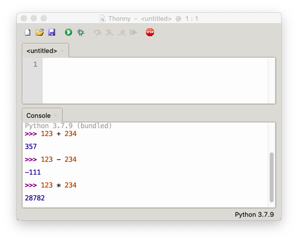

Calcul numérique¶
Python permet de faire des calculs complexes.

Utilisation de la console¶
Tous ces opérations simples, vous pouvez les faire dans la console de votre éditeur Thonny.
tapez vos expression après l’invite
>>>appuyez sur la touche Retour pour exécuter l’expression
vous ne pouvez plus modifer des expression déjà exécutés
vous devez ajouter une nouvelle expression et l’exécuter de nouveau

Opérations de base¶
Vous pouvez additionner deux nombres avec l’opérateur +.
123 + 234
357
Vous pouvez soustraire deux nombres avec l’opérateur -.
123 - 234
-111
Vous pouvez multiplier deux nombres avec l’opérateur *.
123 * 234
28782
Vous pouvez diviser deux nombres avec l’opérateur /.
123 / 234
0.5256410256410257
Opérations entiers¶
L’opérateur // est pour la division entière.
10 // 3
3
C’est la partie entière de la division à virgule flottante.
10 / 3
3.3333333333333335
L’opérateur modulo % donne le reste de la division entière.
10 % 3
1
Nous pouvons faire le calcul inverse: 3 fois 3 donne 9 plus 1 donne 10.
3 * 3 + 1
10
L’opérateur modulo est souvent utilisé pour voir si un nombre est impair. Si le reste de la division modulo donne 1, le nombre est impaire, s’il donne 0 le nombre est pair.
123 % 2
1
Puissance¶
L’opérateur de puissance est **
5 ** 2
25
Dans un octet nous avons 2 à la puissance 8 valeurs différents.
2 ** 8
256
En Python le calcul en entier n’est pas limité dans sa précision.
99 ** 99
369729637649726772657187905628805440595668764281741102430259972423552570455277523421410650010128232727940978889548326540119429996769494359451621570193644014418071060667659301384999779999159200499899
Pour calculer la racine vous pouvez utiliser la relation
La racine de 2 est
2 ** 0.5
1.4142135623730951
Parenthèses¶
L’ordre de priorité est
puissance
multiplication et division
addition et soustraction
Dans l’exemple ci-dessous nous calculons d’abord la puissance (27) ensuite la multiplication (54) et finalement l’addition.
1 + 2 * 3 ** 3
55
Les parenthèses nous permettent de changer cet ordre.
Dans l’exemple ci-dessous nous calculons
d’abord la multiplication (6)
ensuite la puissance (216)
et finalement l’addition (217).
1 + (2 * 3) ** 3
217
Dans exemple suivant nous calculons
d’abord l’addition (3)
ensuite la puissance (27)
et finalement la multiplication (81).
(1 + 2)* 3 ** 3
81
Variables¶
Une variable est une place en mémoire pour stocker une valeur.
En Python une variable est créé avec une opération d”affection. Elle à la forme
variable = valeur
Ou plus générale
variable = expression
L’expression est évalué, et sa valeur est affecté à la variable.
Par exemple 2 + 3 donne 5. La variable a est obtient la valeur 5.
a = 2 + 3
Nous pouvons afficher la valeur de la variable a.
a
5
Utiliser une variable¶
Une fois définie, la variable peut être utilisé dans des expressions, tel que
a * 2
10
Une variable peut etre réaffécté avec une nouvelle valeur
a = 17
a * 2
34
Nom d’une variable¶
Les variable sont sensible à la chasse. Donc a et A sont deux variables différents.
A = 33
Les deux variables ont des valeurs différentes.
a, A
(17, 33)
Le nom d’une variable (ou d’une fonction) est composé
de lettres (majuscule ou minuscule)
du tiret bas
_de chiffres (sauf le premier caractère)
Sont interdit
les mots-clé (
if,else, …)toute autre caractère spécial (
* + % & $ - / ?)
Correct: a2, _a, speed, pos_x, POS_X
Incorrecte:
2var(commence avec un chiffre)if(correspond à un mot-clé)var$2(contient un caractère spécial)
La fonction print()¶
La fonction print() permet d’imprimer
une valeur (nombre ou texte)
une variable
des objets multiples, séparés par une virgule
,
print(123) # nombre
print('hello') # texte
print(a) # variable
print('a =', a, 'cm') # texte et variable
123
hello
17
a = 17 cm
Cas du rectangle¶
A partir de la longueur a et largeur b d’un rectangle nous pouvons calculer:
la surface
le périmètre
a = 4
b = 5
print('surface =', a * b)
print('périmètre =', 2 * a + 2 * b)
surface = 20
périmètre = 18
Utilisez la formule de Pythagore pour calculer la diagonale.
Pour calculer la racine utilisez la relation
print('diagonale =', (a**2 + b**2) ** 0.5)
diagonale = 6.4031242374328485
Maintenant modifiez a et b et refaites les calculs.
Cas du cercle¶
A partir du rayon r, calculeu la circonférence et la surface d’un cercle.
Rappel:
r = 3.5
pi = 3.141
print('circonférence =', pi * 2 * r)
print('surface =', pi * r ** 2)
circonférence = 21.987000000000002
surface = 38.47725
Maintenant modifiez le rayon r et refaites les calculs.